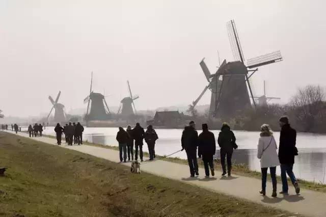
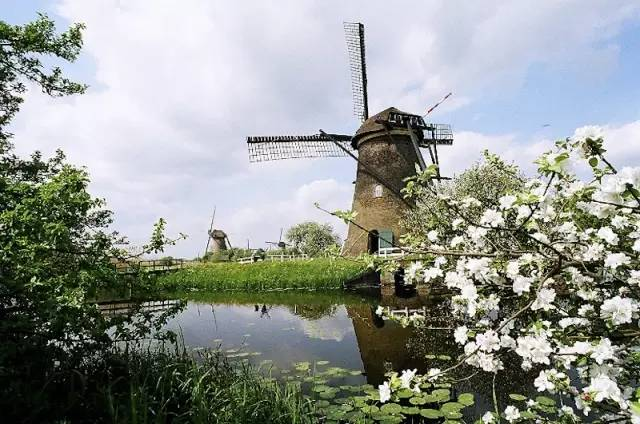
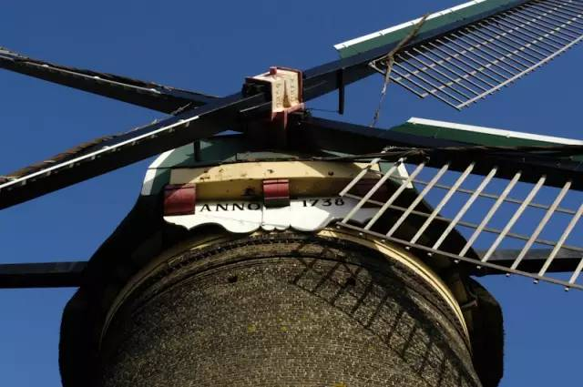
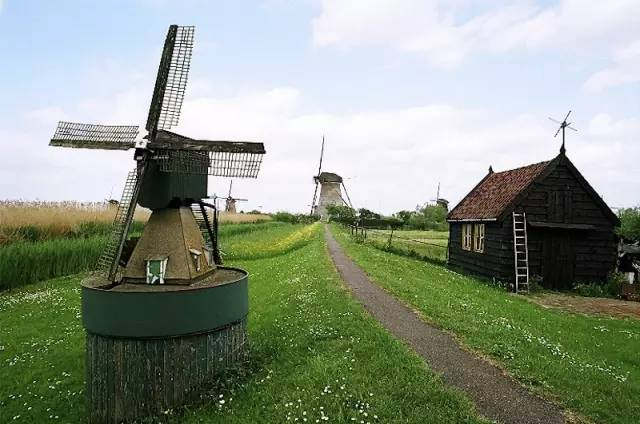

秋日里，风从北海吹过，旷野中吱嘎转动着19座风车，挥舞着巨大的手臂, 壮观而凝重，莱克河(Lek)潺潺流水，见证着荷兰人和洪水搏斗的英勇历史，这里是鹿特丹郊外城东南7公里的小孩儿提防(Kinderdijk)风车村, 18世纪荷兰人建造的排水工程，1997年，小孩堤防风车群被列入联合国教科文组织的世界遗产名录，是吸引各国游客的最具荷兰特色的代表景观。
荷兰的世界文化遗产很特别, 和她与洪水斗争，从大海争夺土地的历史密不可分，因为任何一次大的风浪都有可能让海水侵入到内陆。为了生存下去，荷兰人与自然进行了长期不懈的对抗，所运用的武器就是堤坝、运河和风车。在围海造田的技术上，荷兰人成为伟大的液压技师，他们在广阔的浅水区围起堤坝，在堤坝上建起风车，在堤坝周围开出环形的运河，风车抽出的水排入运河，运河再将汇集起来的水注入大海。今天的荷兰已经看不到那“令人生畏的灾难景象”，而风车和堤坝则成为了这个国家一道独特历史意义的风景。
骑行风车村
无论哪个季节，游客们都会纷至沓来，过去风车群阻挡了过多的海水侵入圩田，从而得以开垦新的土地，圩田的水经由风车流入莱克河（Lek），随后注入北海。而此刻风车已成为了一道风景, 其间是圩田交错的荷兰典型乡村,于是骑上单车伸手去握风的优游，看着一架架风车从身边滑过，不时与迎面前来的“骑士”打个招呼，一切变得恬淡而自然。
 小孩儿堤防的乡间小道上，柔和的风拂在脸上，泥土的芬芳和着青草的香气迎面袭来。天空一碧如洗，明媚的阳光照耀在芦苇，河道，还有每个人的笑脸上，古朴的风车在阳光下悠闲地转动，连同单车那长长的影子一起留在了绿地上。
